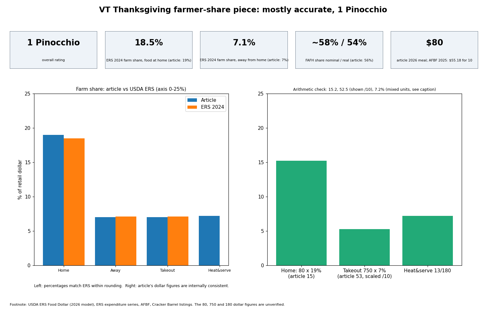

Fact check: Virginia Tech Thanksgiving farmer-share article

Mostly accurate, but the headline cost figure and the restaurant examples are unsourced: 1 Pinocchio
Every checkable percentage matches USDA ERS within rounding, and the dollar arithmetic is correct. The $80 dinner cost, $750 take-out and $180 Cracker Barrel meal could not be traced to a primary source.
- Farm share at home 19%: ERS 2024 is 18.5 cents (rounds to 19 or 18). Supported.
- Away from home 7%: ERS 2024 is 7.1 cents. Supported. Applying it to one take-out order and one Cracker Barrel meal is an average, not a measured figure for those meals.
- 56% of food dollars on dining out: ERS data give about 58% nominal ($1.27T vs $901B, my calculation) and about 54% in real terms. 56% is between them and cannot be matched to a published figure; low confidence.
- $80 / $8 per person: attributed only to "agricultural industry researchers". The AFBF 2025 survey was $55.18 for 10 and the 2026 survey is not out until Nov 18, after the article (Nov 12). Other 2026 estimates range from $66 to $138. Not checkable to a named source.
- $750 take-out for 10, $180 Cracker Barrel: hypothetical or unverified. Listings I found: Cracker Barrel feast for 8-10 at $189.99, family dinner at $119.99. Cracker Barrel's own 2026 price list was not found.
- Since 2003 rising eating-out share: directionally consistent with ERS; not verified year by year.
- Opinion quotes (convenience, "hundreds if not thousands of companies") are not checkable facts.
Misleading context
"Farmer share" is the farm value share of the retail dollar, not farmer earnings or profit; the headline suggests earnings. ERS revised the Food Dollar model in 2026 (all-food farm share 12.3 to 11.8 cents for 2024), so older figures differ. Treating an $80 turkey-dinner cost as a "typical" basket is menu-dependent.
Step: claim check
Answer as above. Key values 2024 ERS: 18.5, 7.1 cents; FAFH $1.27T. Confidence high for ERS shares, low for $80/56%/restaurant prices.
Sources
- https://ers.usda.gov/data-products/food-dollar/summary-findings
- https://www.fb.org/2026-thanksgiving-dinner-cost-survey
- https://www.ers.usda.gov/data-products/food-expenditure-series/documentation
- https://www.self.inc/info/cost-thanksgiving-dinner
- Cracker Barrel listings via search (fsrmagazine.com, slickdeals.net)
- The article (news.vt.edu, Nov 12, 2026)